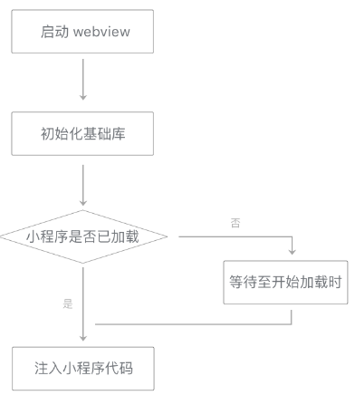

在视图层内，小程序的每一个页面都独立运行在一个页面层级上。小程序启动时仅有一个页面层级，
每次调用wx.navigateTo，都会创建一个新的页面层级；
相对地，wx.navigateBack会销毁一个页面层级。
对于每一个新的页面层级，视图层都需要进行一些额外的准备工作。
在小程序启动前，微信会提前准备好一个页面层级用于展示小程序的首页。除此以外，每当一个页面层级被用于渲染页面，微信都会提前开始准备一个新的页面层级，使得每次调用wx.navigateTo都能够尽快展示一个新的页面。
页面层级的准备工作分为三个阶段。
第一阶段是启动一个WebView，在iOS和Android系统上，操作系统启动WebView都需要一小段时间。
第二阶段是在WebView中初始化基础库，此时还会进行一些基础库内部优化，以提升页面渲染性能。
第三阶段是注入小程序WXML结构和WXSS样式，使小程序能在接收到页面初始数据之后马上开始渲染页面（这一阶段无法在小程序启动前执行）。

图7-3 页面层级准备过程图
对于wx.redirectTo，这个调用不会打开一个新的页面层级，而是将当前页面层级重新初始化：重新传入页面的初始数据、路径等，视图层清空当前页面层级的渲染结果然后重新渲染页面。
最后一次编辑于 2019年08月19日 （未经腾讯允许，不得转载）